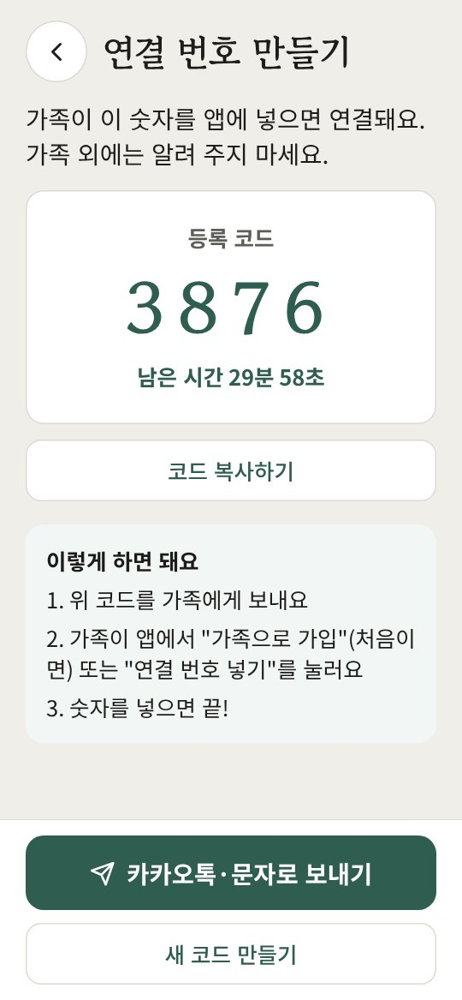
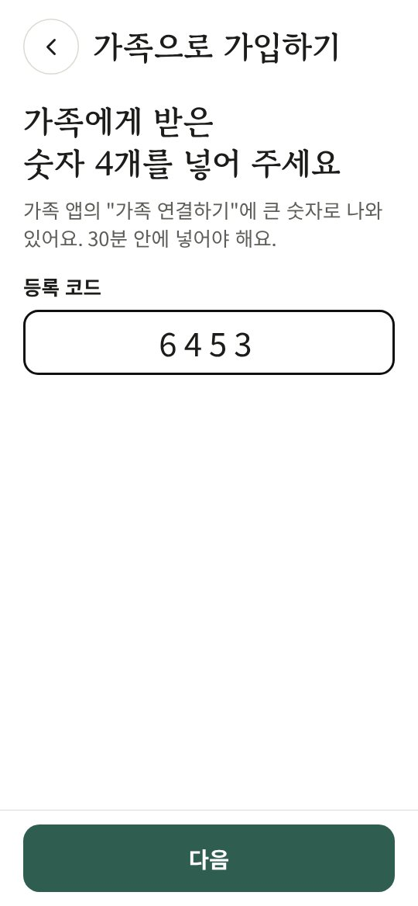
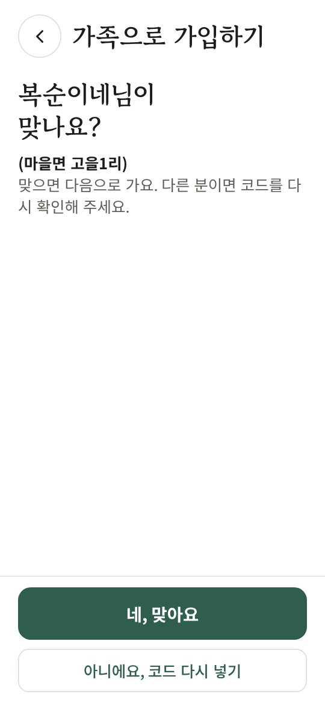
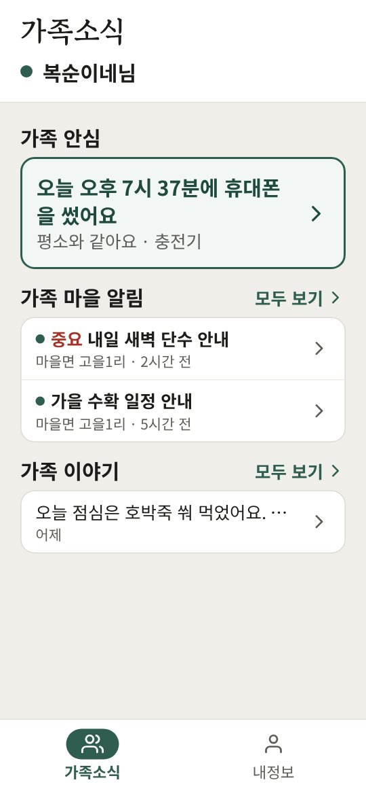
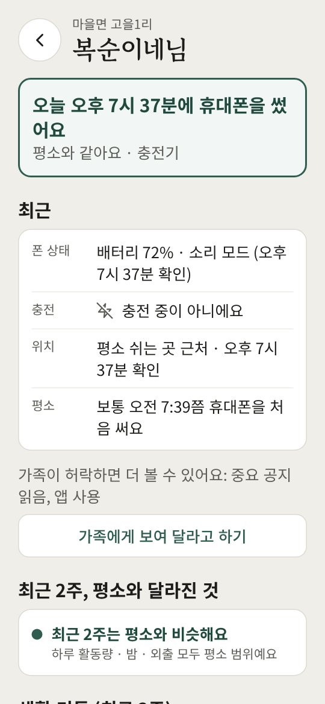
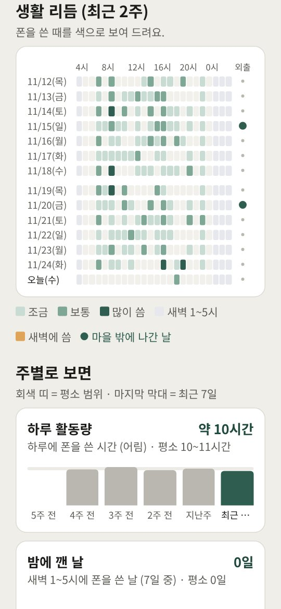
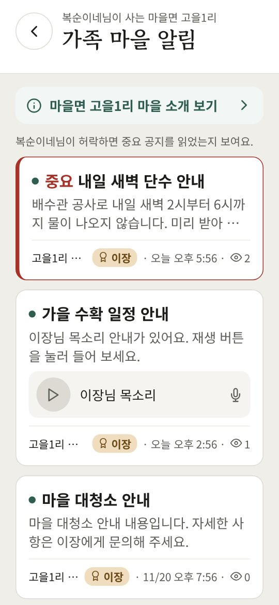
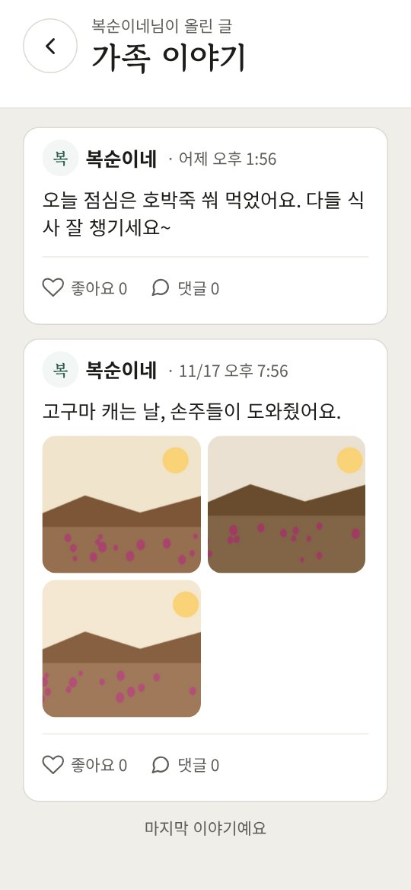

처음 시작하기
가족은 부모님이 만든 숫자 4개로 가입합니다. 위치 확인은 하지 않습니다.
1. 부모님 휴대폰에서 번호 받기
- 부모님 앱에서 내정보 → 가족 관리 → 연결 번호 만들기를 누릅니다.
- 숫자 4개를 받습니다. 30분 동안만 쓸 수 있습니다.


2. 내 휴대폰에서 가입하기
- 앱을 설치하고 카카오, 네이버, 구글 중 하나로 시작합니다.
- 가족을 고르고 다음을 누릅니다.
- 숫자 4개를 넣고 다음을 누릅니다.
- "○○님이 맞나요?"와 마을 이름이 맞으면 네, 맞아요를 누릅니다.
- 별명과 이름을 적고 가족으로 함께하기를 누릅니다.
시간이 지났다고 나오면 부모님 앱에서 새 코드 만들기를 눌러 새 번호를 받으세요.




가족소식 화면
앱을 열면 가족소식이 나옵니다. 맨 위에 지금 보고 있는 분의 별명이 있고, 아래는 세 칸입니다.
- 가족 안심: 오늘 휴대폰을 언제 쓰셨는지, 평소와 같은지.
- 가족 마을 알림: 부모님 마을의 최근 공지 2건.
- 가족 이야기: 부모님이 마을이야기에 올린 최근 글.


여러 분을 연결했으면 맨 위 이름 옆 바꾸기를 눌러 다른 분을 고릅니다. 확인이 필요한 분이 먼저 나오고, 다른 분을 확인해야 하면 노란 줄로 알려 줍니다.
↑ 다른 차례 보기
가족 안심
부모님이 보여 줄 것 정하기에서 허락하신 것만 보입니다. 부모님 휴대폰에는 묻는 화면이 뜨지 않습니다.
- 상자 색으로 바로 알 수 있습니다. 초록은 평소와 같음, 노랑은 살펴볼 일이 있음, 회색은 소식이 끊겼거나 아직 알 수 없음입니다.
- 상자를 누르면 자세히 나옵니다. 최근(폰 상태·충전·위치·평소), 최근 2주, 평소와 달라진 것, 생활 리듬, 주별로 보면 순서입니다.
- 처음 2주는 평소를 배우는 중입니다. 그동안은 평소와 비교하지 않습니다.
- 허락받지 않았으면 아직 안부를 보여 주지 않아요가 나옵니다. 가족에게 보여 달라고 하기로 부탁할 수 있습니다.




휴대폰이 보낸 신호로 짐작한 것이라 몸 상태까지는 알 수 없습니다. 위치는 마을 안·밖과 평소 쉬는 곳 근처인지만 보이고, 지도나 이동 경로는 보이지 않습니다.
↑ 다른 차례 보기
가족 마을 알림
가족 마을 알림 → 모두 보기를 누르면 부모님 마을의 공지가 모두 보입니다. 글을 눌러 읽고 댓글도 달 수 있습니다. 부모님이 허락하시면 중요 공지를 읽으셨는지도 보입니다.


부모님이 나와 같은 마을에 사시면 이 칸에는 안내 한 줄만 나옵니다. 마을 공지는 내 알림판에서 보세요.
↑ 다른 차례 보기
가족 이야기
가족 이야기 → 모두 보기를 누르면 부모님이 직접 올린 글만 모아 볼 수 있습니다. 마을 이웃들이 올린 이야기는 보이지 않습니다.


할 수 있는 것과 없는 것
부모님 마을 공지 읽기 가능
공지 댓글 가능
부모님이 올린 이야기 읽기만
이웃들의 이야기 안 보임
이웃대화 안 보임
공지 올리기 불가
아래쪽 탭은 가족소식과 내정보 두 개입니다. 중요 공지 알림과 "연락이 닿지 않아요" 알림은 끌 수 없습니다. 나머지 알림은 내정보 → 알림 설정에서 정합니다.
↑ 다른 차례 보기자주 묻는 질문
부모님 소식이 안 보여요부모님이 보여 줄 것 정하기에서 허락하셔야 보입니다.
"폰 설정이 필요해요"가 보여요부모님 휴대폰의 배터리 사용 제한이나 위치 "항상 허용"이 꺼져 있어 소식이 늦게 올 수 있다는 뜻입니다. 댁에 가셨을 때 부모님 휴대폰에서 내정보 → 가족 관리 → 보여 줄 것 정하기 맨 위 버튼으로 함께 바꿔 주세요.
번호를 넣었는데 안 돼요30분이 지났을 수 있습니다. 새 번호를 받아 다시 넣어 보세요.
이웃대화 탭이 없어요이웃대화는 마을 주민끼리 쓰는 공간이라 가족에게는 보이지 않습니다.
마을 다른 분들 이야기는 왜 안 보이나요?마을이야기는 그 마을 주민끼리 나누는 곳이라, 가족에게는 부모님이 직접 올린 글만 보입니다.
도움이 필요할 때
앱의 내정보 → 고객센터를 누르거나 gaview.cs@gmail.com 으로 보내 주세요.